Harmonia — la visite, après les deux lots UX
iPhone 390 px, moteur Safari (WebKit), 2026-10-01. Chaque écran a été parcouru en faisant les gestes d'un utilisateur.
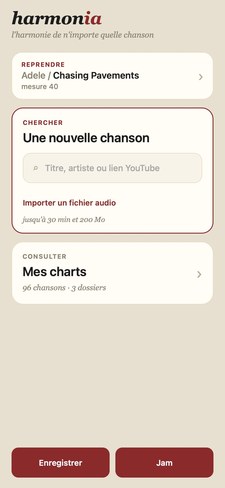
Accueil : « Reprendre · mesure 40 » en tête, vrai champ, import d'un fichier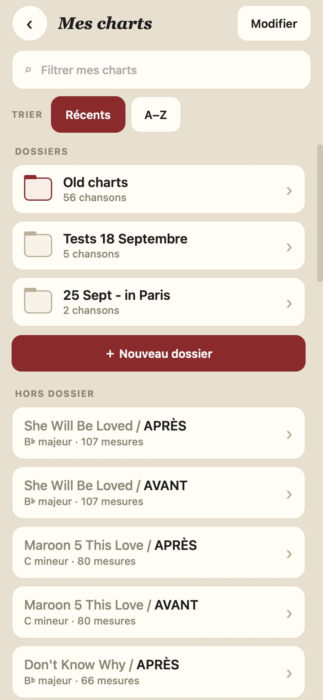
Bibliothèque : tri, « ＋ Nouveau dossier », pastille « corrigé »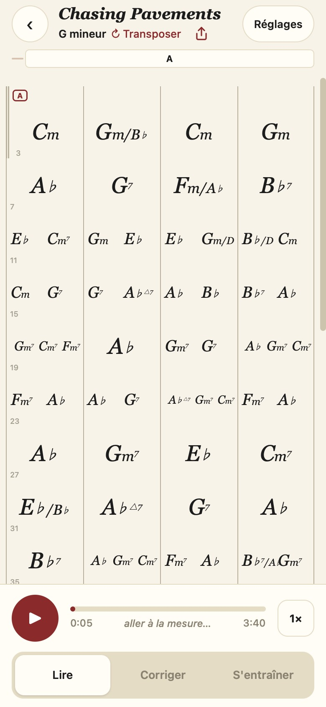
Lire : « G mineur ↻ Transposer », partage, n° de mesure, vitesse « 1× », « aller à la mesure… »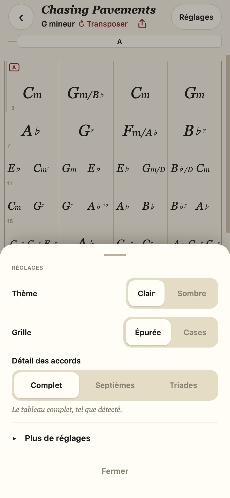
Réglages : l'essentiel, le reste sous « Plus de réglages »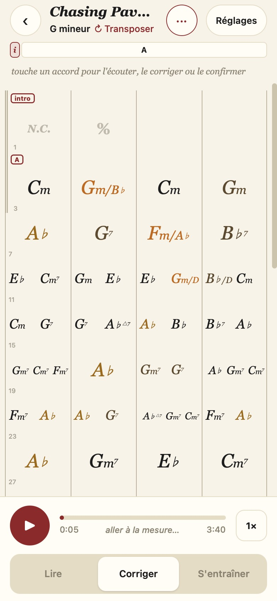
Corriger : un seul indice, toucher l'accord lui-même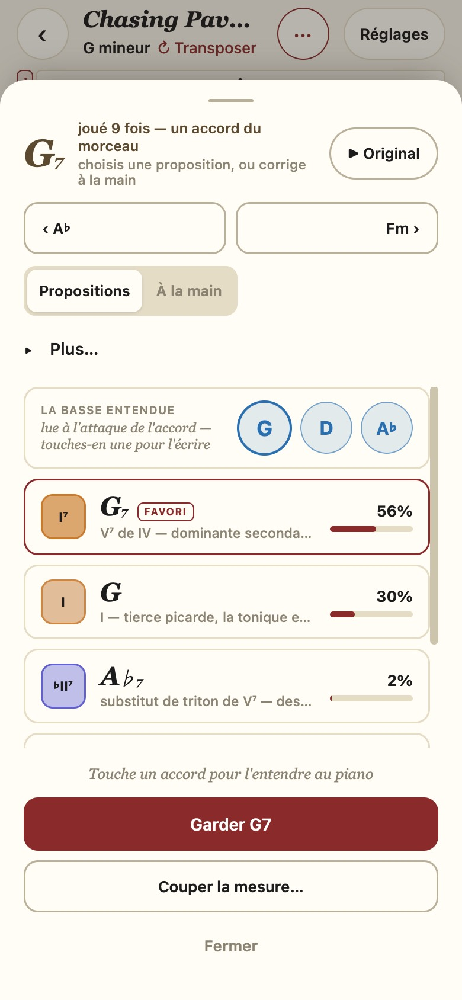
Éditeur : ▶ Original sur demande, ‹ › accord voisin, 2 onglets, « Garder G7 »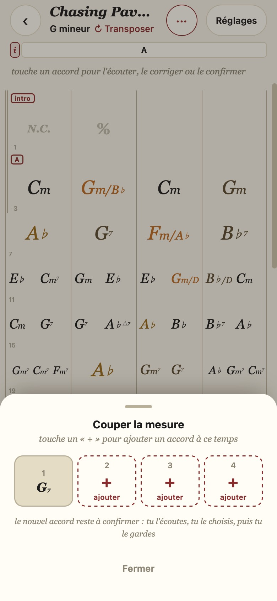
Couper la mesure : on touche le temps, « + ajouter »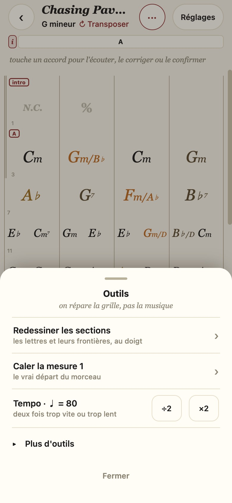
Outils : 3 gestes + Tempo (♩ = 80), le reste sous « Plus d'outils »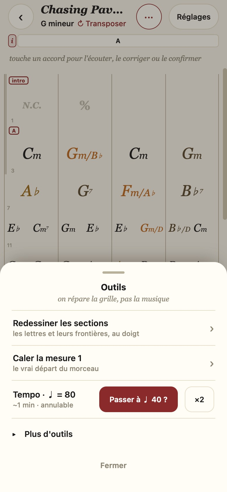
Tempo : « Passer à ♩ 40 ? » — un 2ᵉ tap pour confirmer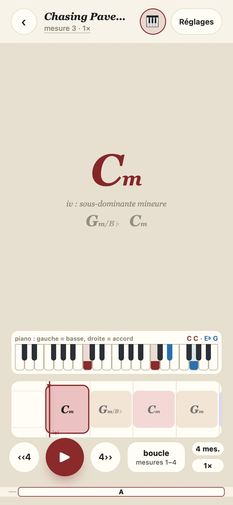
S'entraîner : 🎹, boucle 1·2·4·8, vitesse, rôle court en français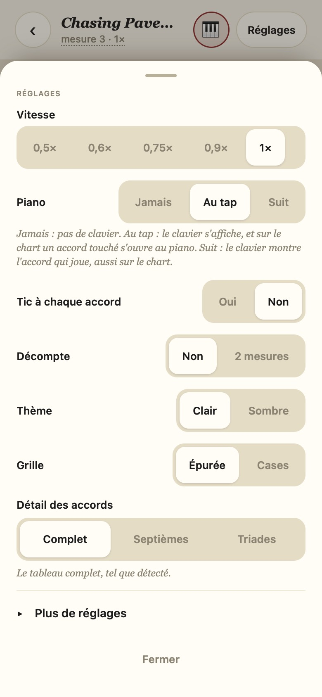
S'entraîner › Réglages : vitesse, piano expliqué, tic, décompte